0
- Cat Gallery 00 ~
- Cat Gallery 05 ~
- Cat Gallery 10 ~
고양이의 눈 속에는
세상 모든 것이 있다
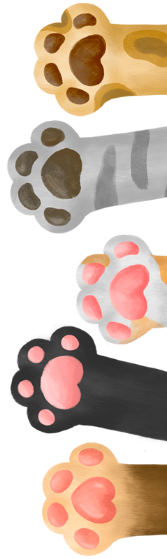
01
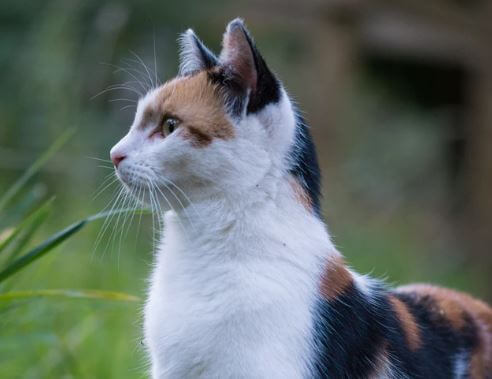
삼색 고양이
한국에서 많이 볼 수 있는 토종 고양이.
털 색이 3가지 이상 섞인 고양이는 유전적으로 암컷이 많이 태어납니다.
close
02
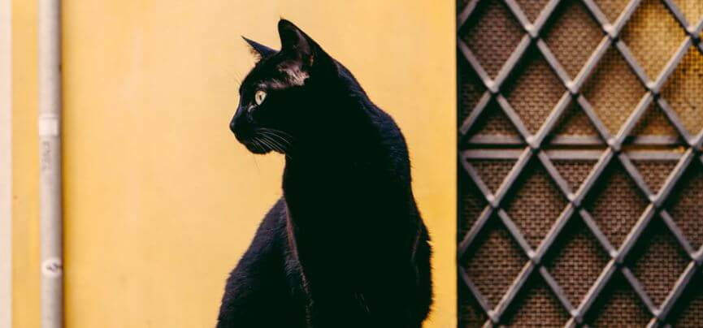
올블랙 고양이
한국에서 많이 볼 수 있는 토종 고양이.
온 몸의 털 색깔이 검은색인 것이 특징입니다.
close
03
 치즈태비
치즈태비
한국에서 많이 볼 수 있는 토종 고양이.
치즈처럼 털 색깔이 노란것이 특징입니다.
close
04
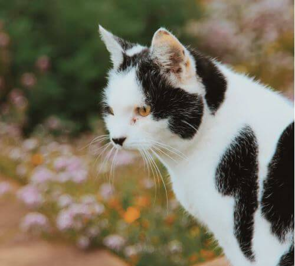
젖소태비
한국에서 많이 볼 수 있는 토종 고양이.
젖소처럼 털의 무늬가 나있는 것이 특징입니다.
close
05
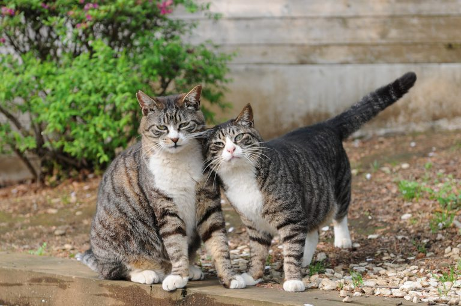
고등어태비
한국에서 많이 볼 수 있는 토종 고양이.
고등어와 털 색깔이 비슷한 것이 특징입니다.
close
06
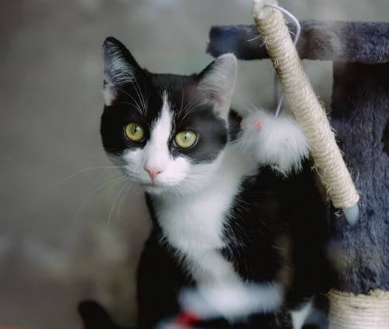
턱시도 고양이
한국에서 많이 볼 수 있는 토종 고양이.
턱시도를 입은 것처럼 가슴쪽에 하얀 털무늬가 특징입니다.
close
07
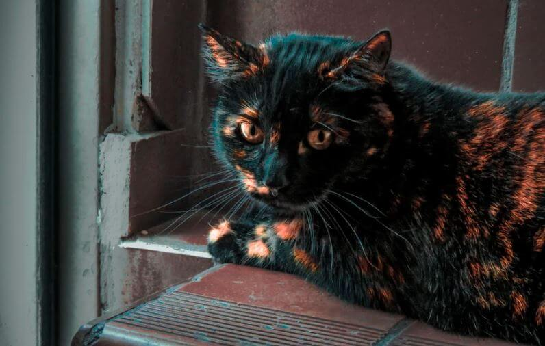
카오스
한국에서 많이 볼 수 있는 토종 고양이.
갈색과 검은색의 털이 섞여있는 것이 특징입니다.
close
08
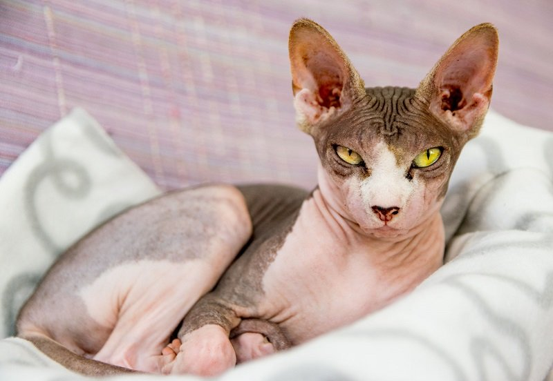
스핑크스 고양이
캐나다에서 자연발생한 돌연변이 고양이.
다른 고양이들과 다르게 털이 거의 없는 것이 특징입니다.
close
09
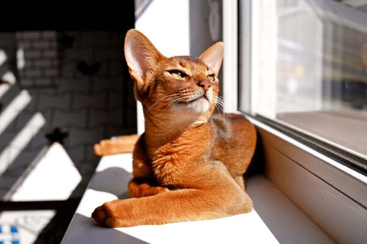
아비시니안
대표적인 단모종 고양이.
샴고양이처럼 자라면서 털 색깔이 바뀌는 것이 특징입니다.
close
10
 샴 고양이
샴 고양이
태국에서 자연발생한 고양이.
젖소처럼 털의 무늬가 나있는 것이 특징입니다.
close
11
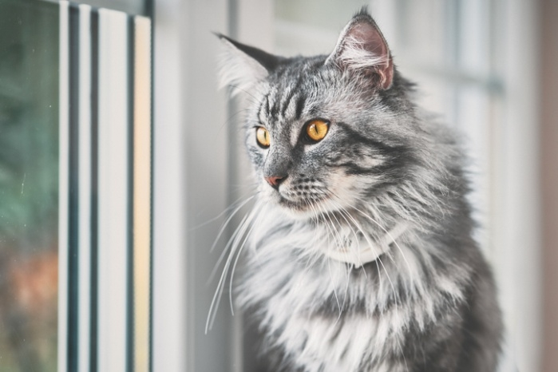
메인쿤
미국 동부 메인주에서 자연발생했다는 설이 있는 고양이.
고양이 중에 가장 큰 종으로 꼬리까지 포함해 100cm가 넘는 것이 특징입니다.
close
12
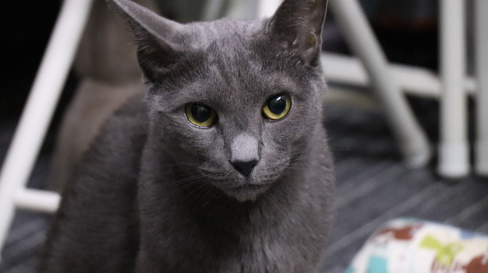
러시안블루
러시아의 아르한겔스크 제도에서 유래해 영국의 종 개량을 통해 만들어진 고양이.
다른 고양이들과 다르게 회색털만 자라는 것이 특징입니다.
close
13
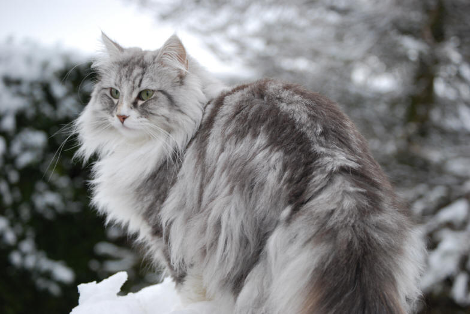
노르웨이숲
노르웨이의 수목 지대에서 자연발생한 고양이.
고양이 중에 가장 큰 종으로 꼬리까지 포함해 100cm가 넘는 것이 특징입니다.
close
14
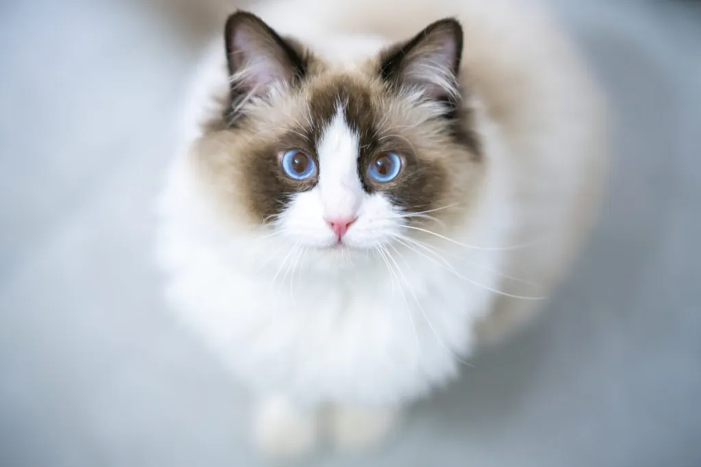
랙돌
미국 캘리포니아에서 인위적으로 교배시켜 만든 고양이.
푸른색의 눈에 뚜렷한 털 색깔이 특징입니다.
close
15
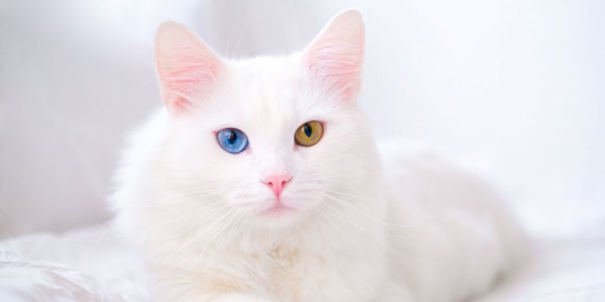
터키시앙고라
튀르키예산 장모종으로, 타타르족이 기르던 마눌(Manul)에서 기원한 것으로 추정되는 고양이.
새하얀 털에 푸른색 눈동자가 특징입니다.
close
 안락사율 13 %
안락사율 13 %